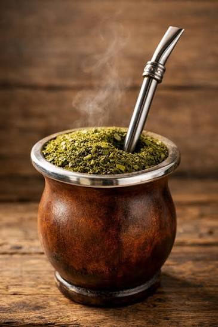

Importância do tema
A importância do tema "A erva-mate na arte paranaense" está em mostrar como a erva-mate influenciou não apenas a economia do Paraná, mas também sua cultura, identidade e produção artística. Por meio da arte, é possível compreender a história do estado, valorizar as tradições, reconhecer a contribuição dos povos indígenas e dos trabalhadores dos ervais, além de preservar a memória do Ciclo da Erva-Mate. Esse tema ajuda a entender como um elemento da natureza se tornou um símbolo cultural e histórico do povo paranaense.

contexto histórico
A erva-mate começou a ganhar grande importância no Paraná durante o século XIX, no período conhecido como Ciclo da Erva-Mate. Seu cultivo e comércio se desenvolveram principalmente em cidades como Curitiba, Paranaguá, Morretes, Ponta Grossa e São Mateus do Sul. A riqueza gerada pela exportação da erva-mate impulsionou o crescimento econômico e urbano do estado. Com esse desenvolvimento, a erva-mate passou a inspirar artistas paranaenses, que retrataram os ervais, os trabalhadores, as indústrias e os costumes ligados ao consumo do mate. Assim, ela deixou de ser apenas um produto econômico e tornou-se um importante símbolo da história, da cultura e da identidade do Paraná.

importancia cultural
A erva-mate é um dos maiores símbolos da identidade cultural do Paraná. Ela representa a história, as tradições e o desenvolvimento do estado, pois esteve presente na economia, no cotidiano e nos costumes da população por muitos anos. Na arte paranaense, a erva-mate aparece em pinturas, esculturas, fotografias e na arquitetura, preservando a memória do Ciclo da Erva-Mate e valorizando a cultura local. Além disso, esse tema reconhece a contribuição dos povos indígenas, primeiros conhecedores e usuários da planta, reforçando a diversidade cultural e a importância desse patrimônio para as futuras gerações.

memoria e patrimonio
curiosidades
erva mate
A erva-mate é uma planta muito especial, conhecida por fazer parte da cultura e da tradição dos povos da América do Sul, principalmente no Sul do Brasil. Seu nome científico é Ilex paraguariensis, e ela já era utilizada pelos povos indígenas, especialmente os Guarani, muito antes da chegada dos europeus. Uma curiosidade interessante é que a erva-mate contém cafeína, substância que ajuda a aumentar a disposição e o estado de alerta. Além disso, possui antioxidantes naturais, que contribuem para a proteção das células do organismo. A erva-mate pode ser consumida de diferentes formas, como chimarrão, tereré e chá. No Sul do Brasil, o chimarrão é muito mais do que uma bebida: representa amizade, hospitalidade e união entre as pessoas. É comum compartilhar a cuia em rodas de conversa, reunindo amigos e familiares. Outra curiosidade é que a erva-mate é extraída de uma árvore nativa da América do Sul. Suas folhas passam por processos de colheita, secagem e moagem até se transformarem no produto que conhecemos. Assim, a erva-mate não é apenas uma bebida tradicional, mas também um importante símbolo cultural, histórico e econômico, que representa os costumes e a identidade de muitos povos sul-americanos. 🌿
Memória e patrimônio
A erva-mate faz parte da memória e do patrimônio cultural de diversos povos, especialmente da região Sul do Brasil. Sua história está diretamente ligada aos costumes dos povos indígenas, principalmente os Guarani, que já utilizavam a planta muito antes da colonização. Com o passar do tempo, o cultivo, a produção e o consumo da erva-mate se tornaram importantes tradições transmitidas de geração em geração. O chimarrão, por exemplo, é um dos maiores símbolos dessa herança cultural. O hábito de preparar e compartilhar a bebida representa momentos de convivência, amizade, acolhimento e união entre as pessoas. Além disso, a erva-mate teve grande importância econômica e histórica, contribuindo para o desenvolvimento de comunidades e cidades do Paraná, de Santa Catarina e do Rio Grande do Sul. A memória da erva-mate também está presente em antigos engenhos, utensílios utilizados na produção, documentos, construções históricas e histórias contadas pelas famílias que trabalharam com seu cultivo e beneficiamento. Esses elementos fazem parte do patrimônio material e imaterial, pois preservam tanto os objetos e lugares históricos quanto os conhecimentos, saberes e tradições relacionados à planta. Dessa forma, preservar a história da erva-mate significa valorizar a identidade cultural, reconhecer o trabalho das gerações passadas e manter viva uma tradição que continua fazendo parte da vida de muitas pessoas até os dias de hoje. 🌿